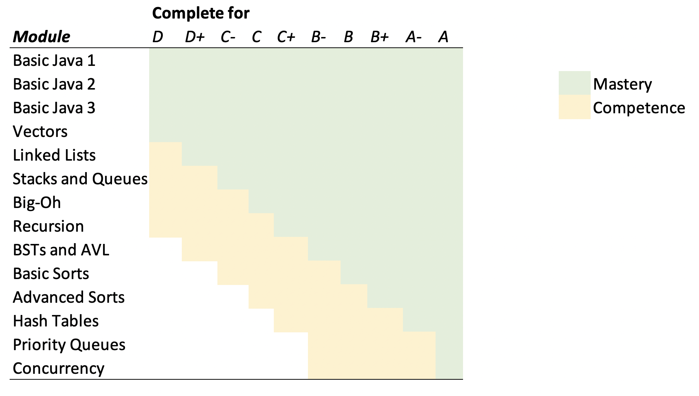

CS2501 - Grading Policy
Main Logistics Page (md)
The grading policy in this course is somewhat unconventional. This page will attempt to clarify how grades are determined in this course. The course contains 14 modules. Each module is a course topic that contains either two or three assessments. The assessment types are as follows:
- quizzes: Every module contains a quiz. Quizzes are taken during lab and can be retried if not passed. Every quiz is fully pass/fail. Every week in lab, you will have the opportunity to take up to two quizzes (either new or retaking old quizzes...completely up to you). The final exam period is your last opportunity to catch up on as many quizzes as you can.
- homework 1: A first homework for each module. Most of the time, these involve writing code, implementing a data structure, etc. Homeworks are also graded pass/fail.
- followup homework 2: Some (but not all modules) also contain a second homework assignment that usually builds upon the first or asks you to reflect or analyze the first homework. These assignments are also graded pass/fail.
You can see a summary of the specific assignments at the course homeworks page As stated earlier, all quizzes and homeworks are graded pass/fail, and all quizzes and homeworks can be submitted multiple times if necessary. Grading guidelines for what constitutes passing a quiz or homework will be published on the course website as the assignments roll out over time.
For each module, your grade will be in one of three states:
- Incomplete: No part (no quiz or homework) of this module has been completed. We have zero evidence that you have any competency in this module topic.
- Competency: At least one part of the module has been successfully passed, but at least one part of the module remains not passed. You have shown at least some competency with this topic.
- Mastery: All parts of this module have been passed. It seems as if you understand this topic.
The table below summarizes what your letter grade will be in the course given your level of competency / mastery in the various modules. Note that once a grade is achieved, it is impossible for your grade to become lower.
